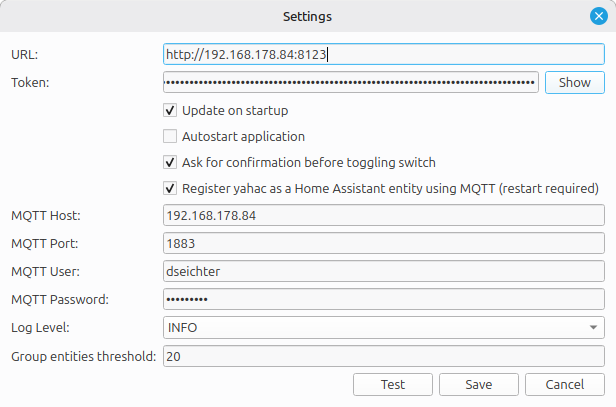
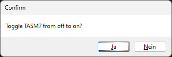

Configuration
The configuration of yahac is really simple. Therefore most of the settings are already done, after you started the application the first time.

Option
Important: after changing the host or token, you need to restart the application.
URL
This is the url you reach your Home Assistant instance. Just copy and paste it from your browser.
Token
The token, you have created can be added/shown here.
Update on startup
Let yahac check during startup, of there is an update (never release on GitHub) available.
Autostart application
If you wish, that yahac will start automatically after you have logged in to your computer, you can set this option to true.
Ask for confirmation
This option is only relevant for switches. If you want to change the state of a switch, you should be sometimes careful. Therefore, default true, this option will enable a small confirmation dialog, as soon as you click on the entry.
.
MQTT
You can register yahac as a MQTT device within your Home Assistant system.
Register yahac as MQTT
If this checkbox is set, please be sure, you have filled out all the entries below.
MQTT Host
Your DNS name or IP address of your MQTT broker.
MQTT Port
The port, your service is listening.
MQTT User
Username for mqtt. To increase security, you can create a new user within your MQTT.
MQTT Password
Last but not least, provide the password.
Logging
yahac writes per default the logs to /tmp/yahac.log. Since there are no sensitive data, the temp file is available within all operating systems, I kept this approach.
Loglevel
Specify your loglevel, you want to run yahac. At the beginning, you might see potential configuration issues, so I recommend to set to INFO. Default is ERROR.
Group entities threshold
Using this value to specify, when the tray menu should start with grouping by sensors, switches, etc. This enables a more clean view, if you have added a lot of entities. Default is 5.
Secure String
The secure string is like an API key. If you provide a string here and enabled it, every incoming payload needs to match. Otherwise the command won't be executed.